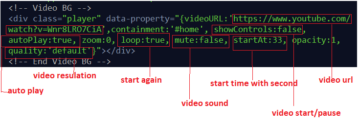
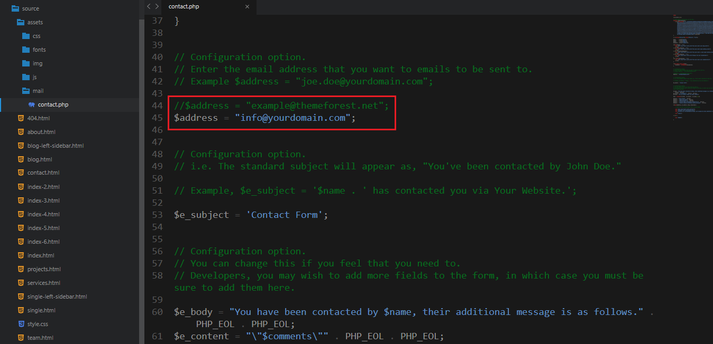
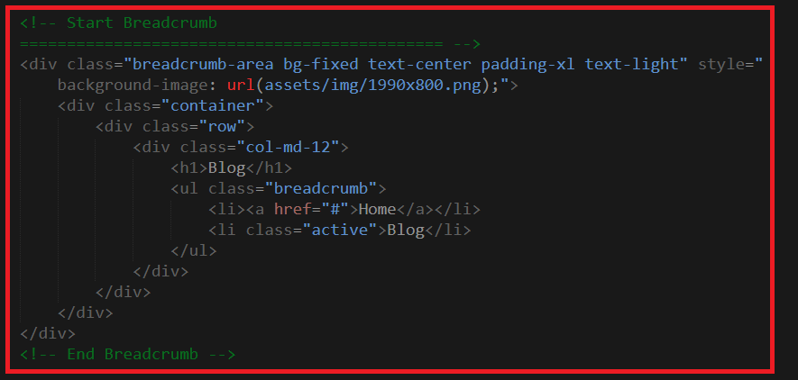

Thank you for purchasing our template. We hope that you find all your questions regarding this Template answered in this Documentation as much in details as possible. However, if you still need support, do not hesitate to contact us at our support forum for this Template. If you have any questions that are beyond the scope of this help file, please feel free to email me. Thanks so much!
Charities is a HTML5 Charity & Nonprofit Template designed specifically for , campaigns/projects/causes, donation system, non-profit events, fund raising, crowdfunding campaigns for cause or charity group/organization, call for volunteers, vision and mission page, and many more. This is highly customizable – looks awesome on tablets and mobile devices.
This template comes with 6+ unique Demo and included 35+ valid HTML files. All standalone pages such as About, Event, Projects, Causes, Blog , Testimonials, FAQ, 404 or others essentials pages are included. Well commented code, well-documented file structure and 24/7 professional and ultra-fast Support.
To edit this template with your info you will need a code editor, i use Sublime Text (http://www.sublimetext.com/3) and a browser i recommend to use Google Chrome.
There is multiple home page layouts to chose from (multi page and one page), also various selection of pages that you can use to create your website, but you can also create your own page layouts very easily (just copy and paste code form the elements examples).
When you start editing the template with your info is good idea to create separate folder, copy the assets folder and 404.html page there, rename one of the index... files to index.html and then move and edit pages that you will use. Also is good practice to create separate styleseet for your edits and load it bellow Charities CSS.
Follow the steps below to setup your site template:
HTML/css - Stylesheet filesHTML/fonts – Icon font filesHTML/img - Image filesHTML/js - Javacript filesOnce you download the template, you can see a folder with several files and sub folders. You can read description of some important files in continue.
Charities follows a simple and easy to customize coding structure. Here is the sample for your reference:
<!DOCTYPE html>
<html lang="en">
<head>
<title>Charities - Charity & Nonprofit Template</title>
<!-- ========== Start Stylesheet ========== -->
<link href="assets/css/bootstrap.min.css" rel="stylesheet">
<link href="assets/css/font-awesome.min.css" rel="stylesheet">
<link href="assets/css/magnific-popup.css" rel="stylesheet">
<link href="assets/css/owl.carousel.min.css" rel="stylesheet">
<link href="assets/css/owl.theme.default.min.css" rel="stylesheet">
<link href="assets/css/animate.css" rel="stylesheet">
<link href="assets/css/bootsnav.css" rel="stylesheet">
<link href="assets/style.css" rel="stylesheet">
<link href="assets/css/responsive.css" rel="stylesheet">
<link href="style.css" rel="stylesheet">
</head>
<body>
<!-- Start Navigation -->
<nav class="navbar navbar-default navbar-fixed white no-background bootsnav">
</nav>
<!-- End Navigation-->
<!-- Start Main
============================================= --->
<main>
</main>
<!-- END Main Content -->
<!-- Star Footer
============================================= -->
<footer>
</footer>
<!-- End Footer -->
<!-- jQuery Frameworks
============================================= -->
<script src="assets/js/jquery-1.12.4.min.js"></script>
<script src="assets/js/bootstrap.min.js"></script>
<script src="assets/js/equal-height.min.js"></script>
<script src="assets/js/YTPlayer.min.js"></script>
<script src="assets/js/jquery.appear.js"></script>
<script src="assets/js/jquery.easing.min.js"></script>
<script src="assets/js/jquery.magnific-popup.min.js"></script>
<script src="assets/js/modernizr.custom.13711.js"></script>
<script src="assets/js/owl.carousel.min.js"></script>
<script src="assets/js/wow.min.js"></script>
<script src="assets/js/isotope.pkgd.min.js"></script>
<script src="assets/js/count-to.js"></script>
<script src="assets/js/bootsnav.js"></script>
<script src="assets/js/custom.js"></script>
</body>
</html>



Charities uses 2 fonts: Open Sans & Montserrat from the Google Fonts Library. You can change the fonts by following code
@import url('https://fonts.googleapis.com/css?family=Open+Sans');
@import url('https://fonts.googleapis.com/css?family=Montserrat:400,600,700,900');
We would really love to take this opportunity to appreciate guys whose items were helpful to us to make Charities a really beautiful theme for our awesome users: